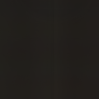
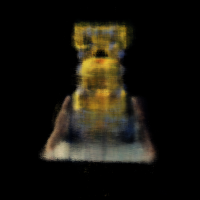

<script src="https://rawcdn.githack.com/oscarmorrison/md-page/master/md-page.js"></script>
<noscript>
<a href="../index.html">Main page</a>
# Final Project (NeRF)

## Description

The main goal of this project was to implement a NeRF model from scratch.
First part of the project was to implement a simple NeRF model for 2D images.
Second part was to implement a NeRF model for 3D images.

## Part 1: Fit a Neural Field to a 2D Image

I used the suggested MLP architecture for the NeRF model.
I also implemented the positional encoding exactly as suggested in instructions with L=10.


One unique part of my solution is instead of sampling image pixels randomly, I created a full pytorch dataset with all the pixels in the image.
This way I was able to use PyTorch's DataLoader (with shuffle=True) to create batches of data for training and would also be guaranteed to have iterated over all the pixels in the image.

Instead of running the training loop for fixed number of iterations, I ran over the whole dataset for a fixed number of epochs.
I calculated the number of epochs by dividing the number of wanted iterations by the number of batches in the dataset.

Here are the results that I got for the fox image after training for 1000 iterations with L=10, LR=1e-3, 1000 iterations:

Original image:


PSNR graph:


Samples across training (1, 1000 / 16, 1000 / 8, 1000 / 4, 1000 / 2, 1000 iterations):


Video of the progress:


I achieved clean results with a high PSNR score with the suggested hyperparameters.

I also tested different 1e-2 and 1e4 learning rates but they didn't have any visible effect on the results and PSNR score.

<br>

I also trained the model on a custom image. I used LR = 1e-3, L=15 and 2000 iterations as the image is more detailed and has more features.


PSNR graph:


Samples across training (2000 / 16, 2000 / 8, 2000 / 4, 2000 / 2, 2000 iterations):


The PSNR graph increased slower for the custom image, I think this is because the image is more detailed and it's harder to fit the model to it.

<br>

For hyperparameter tuning in addition to trying different learning rates from 1e-2 to 1e-4 (which didn't have meaningful effect on the results),
I also tried different L values.

Here are the results of custom image NeRF training for L=5, L=10, L=15.

PSNR graphs:
<div style="display: flex; flex-direction: row; flex-wrap: wrap; gap: 10px;">
  
  
  
</div>

Final generated images:
<div style="display: flex; flex-direction: row; flex-wrap: wrap; gap: 10px;">
  
  
  
</div>

As you can see, L=5 has clearly worse final result and plateus at a lower PSNR score (although having faster growth in the beginning).
This suggests that L=5 is too low and the model is not able to capture enough details.

L=10 actually has better PSNR score although its results are similar to L=15.
This shows that L=10 is enough to capture the details of the image, while L=15 makes training slower and doesn't improve the results.

<br>


## Part 2: Fit a Neural Radiance Field from Multi-view Images

For **parts 2.1 - 2.2** of the assignment, I implemented transformation and sampling functions closely following the instructions.
I wrote lots of tests with random inputs to make sure that the functions are working correctly.
For ray sampling, I followed the global sampling approach.

For **part 2.3** I decided to avoid creating a dataloader since it wasn't clear how to organize random sampling of pixels with PyTorch classes.
And the benefits of putting functions into a class were also not clear, so I ended up using global functions for data sampling.
But I still was able to use my functions with given viser code snippets to produce 3D illustrations of camera positions and sampled rays.

100 rays sampled globally with 64 samples per ray with perturbation:


100 rays sampled from one camera (first training image):


Viper was a great tool to use and it helped me a ton with debugging my sampling code.
I first implemented ray sampling with another approach of first choosing images and then sampling rays from them.
Viper helped me see bugs in my implementation and I decided to switch to global sampling approach, which I then also debugged with Viper.

Here is an extra illustration of sampling 100 rays and points for 10 times to make sure the whole scene is well represented by sampled points.


<br>

For **part 2.4** I implemented the NeRF model closely following the suggested architecture.


For **part 2.5** I implemented volumetric rendering exactly as suggested in instructions.
I used `torch.cumprod` in my implementation. 
The provided code tests were helpful to make sure that the rendering is working correctly.

<br> 

To train the model, I used the suggested hyperparameter values:
batch_size=10000
learning_rate=5e-4

I have trained the model for 2000 iterations, here is the results that I got.
I used all 10 images for validation, not just 6.

PSNR graphs (training, validation):
<div style="display: flex; flex-direction: row; flex-wrap: wrap; gap: 10px;">
  
  
</div>

Here are images generated by the model at different iterations (camera of the first training image):
<div style="display: flex; flex-direction: row; flex-wrap: wrap; gap: 10px;">
  <div style="display: flex; flex-direction: column; align-items: center;">
    
    <span>iteration 10</span>
  </div>
  <div style="display: flex; flex-direction: column; align-items: center;">
    
    <span>iteration 50</span>
  </div>
  <div style="display: flex; flex-direction: column; align-items: center;">
    
    <span>iteration 100</span>
  </div>
  <div style="display: flex; flex-direction: column; align-items: center;">
    
    <span>iteration 150</span>
  </div>
  <div style="display: flex; flex-direction: column; align-items: center;">
    
    <span>iteration 200</span>
  </div>
  <div style="display: flex; flex-direction: column; align-items: center;">
    
    <span>iteration 500</span>
  </div>
  <div style="display: flex; flex-direction: column; align-items: center;">
    
    <span>iteration 800</span>
  </div>
  <div style="display: flex; flex-direction: column; align-items: center;">
    
    <span>iteration 1800</span>
  </div>
</div>

Here is the final spherical rendering of the lego video using the provided test cameras extrinsics:


<br>

For the Bells and Whistles, I updated the volrend function to have custom pink background in the scene.
The change was very simple, I just added a pink color multiplied by the last value of transmittance.

Here's the same rendering video with pink background:


</noscript>